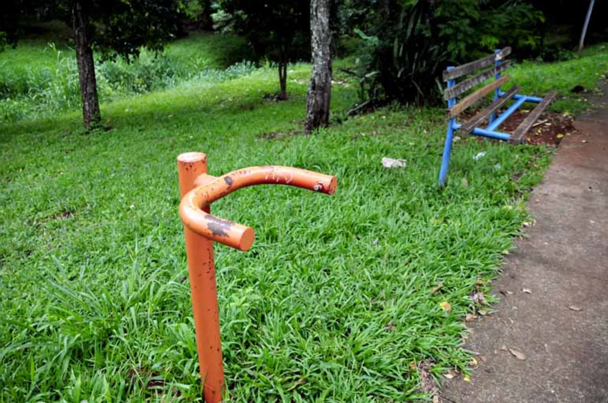

O problema das áreas de lazer abandonadas
Muitos espaços da nossa cidade não são acessíveis para a prática de exercícios físicos ou para momentos de lazer em família. A falta de manutenção em praças, parques e outros locais públicos afasta os moradores e compromete a qualidade de vida da comunidade. Problemas como equipamentos quebrados, calçadas esburacadas, falta de iluminação, acúmulo de lixo e vandalismo tornam esses espaços inseguros e pouco atrativos.
